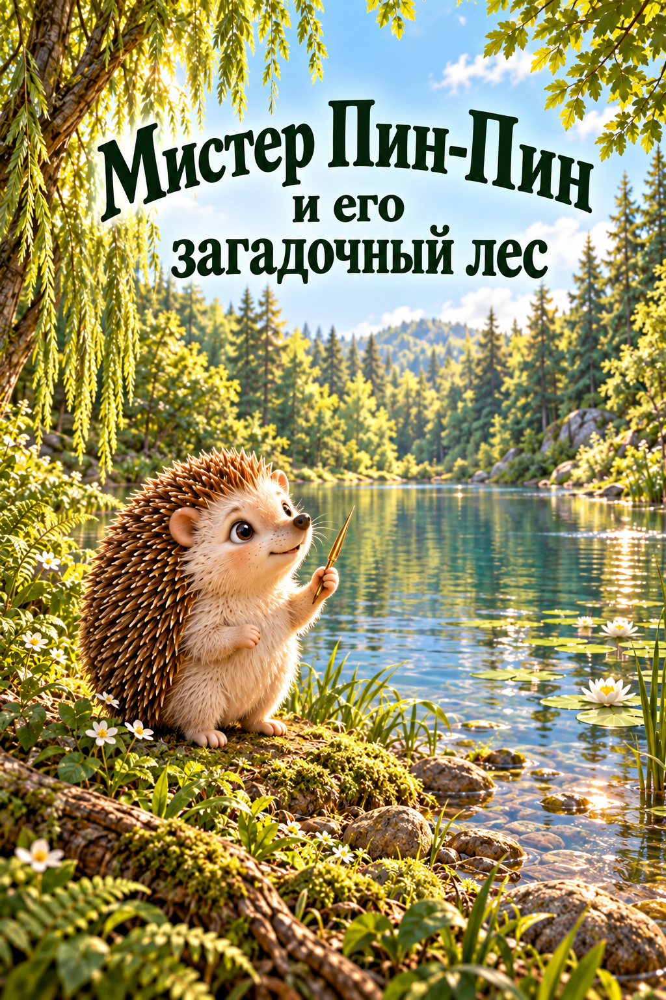
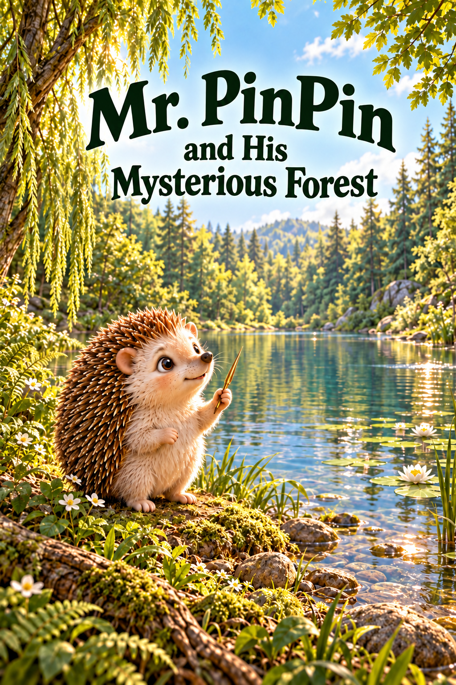
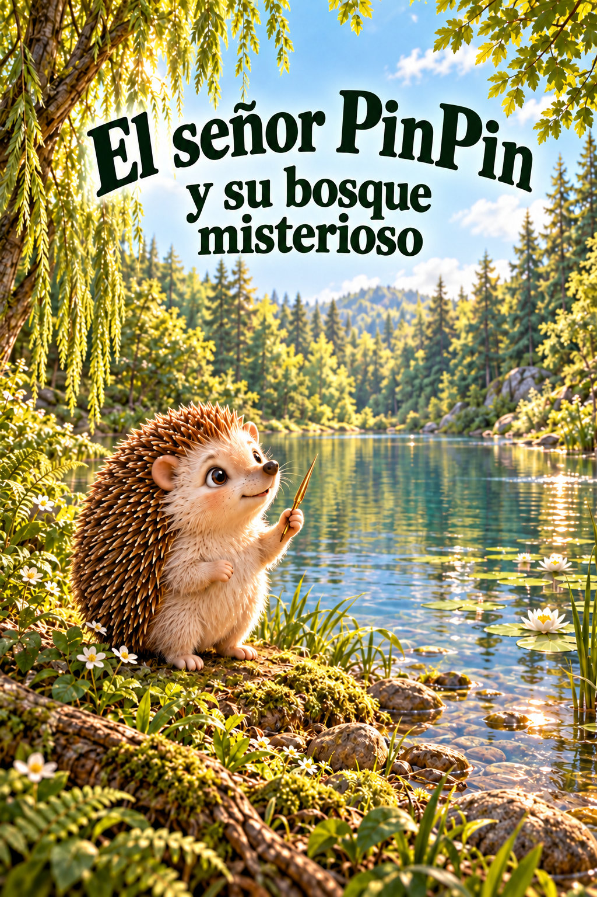

Chapter 1 / Cover candidates
Chapter 1 illustrated covers
Three proposed illustrated title covers.
3 of 3 images generated. Proposed, awaiting user approval.
Generation 1 / Reading position 1
Chapter 1 title cover — Russian
After PinPin draws a circle with his golden quill, Crystal Lake fills again. Cover combines the restored setting and his quill; the solo portrait is cover staging.
Camera. Portrait low near-bank view, PinPin foreground, lake middle distance, willow/woodland background, upper-third open sky for title.

What I See
Visually inspected full image: exact Russian wording, clear large dark-green lettering, recognizable solo PinPin with two forelimbs and two hind feet, restored lake and willow setting. Golden quill is long and stylized with a small ridge near the grip; no additional cast. Portrait is deliberate cover staging. Highlights are warm and bright. Proposed, awaiting user approval.
Markdown record · Full-resolution image
{kind=link}
Exact Prompt
Use case: illustration-story. Asset type: finished illustrated children's chapter cover, portrait 1024 x 1536 PNG, full bleed. Create a new Chapter 1 cover with a large integrated title in the upper third, matching the warm dimensional woodland picture-book finish and confident dark-green display serif lettering of reference 1. Input images: Image 1 is STYLE AND COVER LAYOUT ONLY, not its tractor subject. Image 2 is PinPin CHARACTER IDENTITY and his narrow GOLDEN HEDGEHOG QUILL, not its rabbit or dry lake. Image 3 is the restored CRYSTAL LAKE and WILLOW ENVIRONMENT, not its rabbits. Scene: beautiful clear restored lake among lush woodland, weeping willow canopy along the side, lily pads, tiny white wildflowers and fern-lined mossy bank. Warm morning sunlight and gentle clear-water reflections. A gap of soft bright blue sky above the lake supplies a naturally uncluttered title zone. Subject: Mr. PinPin alone in the foreground on the near bank, recognizable cream furry face and belly, chestnut spines, rounded ears, expressive dark eyes and small dark nose, friendly curious expression. His body proportions and facial identity match the references. He holds one slender golden hedgehog spine in one forepaw, like the golden needle shown in reference 2, celebrating the lake he has restored. The quill is a simple slim tapered gold spine, NOT a feather, pen, staff or weapon. No clothes. Keep believable small hedgehog anatomy, two forelimbs and two hindlimbs with natural partial occlusion. Low woodland camera with a clear foreground, lake middle distance and tall forest backdrop. Text (verbatim, exact Cyrillic): "Мистер Пин-Пин" and "и его загадочный лес". Set "Мистер Пин-Пин" as the prominent upper title; below it set "и его загадочный лес" over one or two balanced lines as needed, in the same dark forest-green storybook serif. Preserve every word and the hyphen; title should be large and legible as a library thumbnail. It is typography integrated directly into the illustration, no text box or banner. Keep all lettering comfortably inside edges. Do not add chapter numbers, author name, subtitle or other text. Constraints: PinPin is the only animal. No rabbit, beaver, vehicle, other cast, invented plot event, clothing, border, watermark or logo. Dimensional tactile fur, quills, moss and foliage; warm detailed woodland atmosphere matching the established book. Maintain clear readable type and softly controlled highlights.
References
- title-ru-v1.png: Style and cover-layout reference only: dimensional woodland, large integrated upper-third title; exclude tractor and timber.
- 04.png: Character identity and golden quill reference only: PinPin cream face, chestnut spines, small animal anatomy, slim golden hedgehog quill; exclude rabbit.
- 08.png: Restored Crystal Lake and willow environment continuity; exclude all rabbits and extra cast.
{kind=link}
{kind=link}
{kind=link}
Generation 2 / Reading position 2
Chapter 1 title cover — English
After PinPin draws a circle with his golden quill, Crystal Lake fills again. Cover combines the restored setting and his quill; the solo portrait is cover staging.
Camera. Portrait low near-bank view, PinPin foreground, lake middle distance, willow/woodland background, upper-third open sky for title.

What I See
Visually inspected full image: exact English title Mr. PinPin and His Mysterious Forest, prominent and readable in the matching green serif. Lake, willow, PinPin pose, expression, visible limb attachments and golden quill appear consistent with the Russian master. Pixel identity outside text has not been certified. Proposed, awaiting user approval.
Markdown record · Full-resolution image
{kind=link}
Exact Prompt
Use case: text-localization. Asset type: illustrated children's chapter cover, portrait 1024 x 1536 PNG. Edit the supplied Russian cover. Change ONLY its title lettering to English. This is a typography-only localization. Text (verbatim): "Mr. PinPin" and "and His Mysterious Forest". Set "Mr. PinPin" as the prominent top line and "and His Mysterious Forest" in balanced lines below, all inside the same upper-third title area. Preserve the warm dark forest-green storybook display serif character, generous scale, graceful arch and comfortable margins. Preserve the exact capitalization, spelling. No Russian text remains. No additional text. INVARIANTS: preserve PinPin's exact face, body, size, pose, two forelimbs, two hind feet, golden quill and expression; preserve the lake, lily pads, willow branches, flowers, foreground stones, camera framing, light, exposure, color and all illustration content exactly. No repainting of the scene, no extra animal, no crop, no new border or badge. Change only the upper title letters and their line breaks.
References
- title-ru-v1.png: Edit target: approved-for-localization visual master (still pending user approval), preserve the illustration; replace only the lettering.
Generation 3 / Reading position 3
Chapter 1 title cover — Spanish
After PinPin draws a circle with his golden quill, Crystal Lake fills again. Cover combines the restored setting and his quill; the solo portrait is cover staging.
Camera. Portrait low near-bank view, PinPin foreground, lake middle distance, willow/woodland background, upper-third open sky for title.

What I See
Visually inspected full image: exact Spanish title El señor PinPin y su bosque misterioso, including ñ. Large dark-green display letters remain comfortably within the edges. PinPin, golden quill, visible limb attachments, willow and restored lake are visually consistent with the Russian master. Pixel identity outside the title has not been certified. Proposed, awaiting user approval.
Markdown record · Full-resolution image
{kind=link}
Exact Prompt
Use case: text-localization. Asset type: illustrated children's chapter cover, portrait 1024 x 1536 PNG. Edit the supplied Russian cover. Change ONLY its title lettering to Spanish. This is a typography-only localization. Text (verbatim): "El señor PinPin" and "y su bosque misterioso". Set "El señor PinPin" as the prominent top line and "y su bosque misterioso" in balanced lines below, all inside the same upper-third title area. Preserve the warm dark forest-green storybook display serif character, generous scale, graceful arch and comfortable margins. Preserve the exact capitalization, spelling, and the ñ in señor. No Russian text remains. No additional text. INVARIANTS: preserve PinPin's exact face, body, size, pose, two forelimbs, two hind feet, golden quill and expression; preserve the lake, lily pads, willow branches, flowers, foreground stones, camera framing, light, exposure, color and all illustration content exactly. No repainting of the scene, no extra animal, no crop, no new border or badge. Change only the upper title letters and their line breaks.
References
- title-ru-v1.png: Edit target: approved-for-localization visual master (still pending user approval), preserve the illustration; replace only the lettering.
Source and Process
Russian master and English/Spanish typography-only edits, using the built-in imagegen tool.
Reading the Original
Read entire original chapter 1 in docs/storyboard/book.json and both chapter translations in translations.json. A golden quill restores Crystal Lake; solitary foreground portrait holding the quill is a cover staging invention, not an additional story action.
The Method, in Order
- Inspect source chapter and references.
- Generate and review Russian master.
- Create English and Spanish title edits from the same master.
- Review dimensions, text and identity; register exact prompts and evidence.
The Five-Shot Plan
- Chapter 1 title cover — Russian Portrait low near-bank view, PinPin foreground, lake middle distance, willow/woodland background, upper-third open sky for title.
- Chapter 1 title cover — English Portrait low near-bank view, PinPin foreground, lake middle distance, willow/woodland background, upper-third open sky for title.
- Chapter 1 title cover — Spanish Portrait low near-bank view, PinPin foreground, lake middle distance, willow/woodland background, upper-third open sky for title.
Measured, Not Estimated
168.8 seconds summed image-call wall time across 3 registered calls. This includes tool waiting, not just model computation. It excludes preparation, review, publishing and any undocumented earlier work. No monetary cost is exposed by these calls.
Records above follow actual generation time. Reading positions are recorded separately. Every attempt has its own filename and record; a retry is not counted as a successful one-shot.